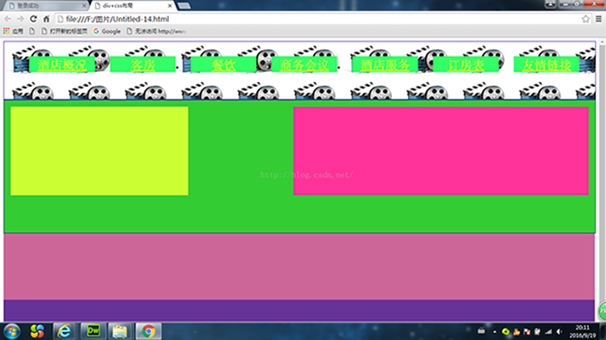
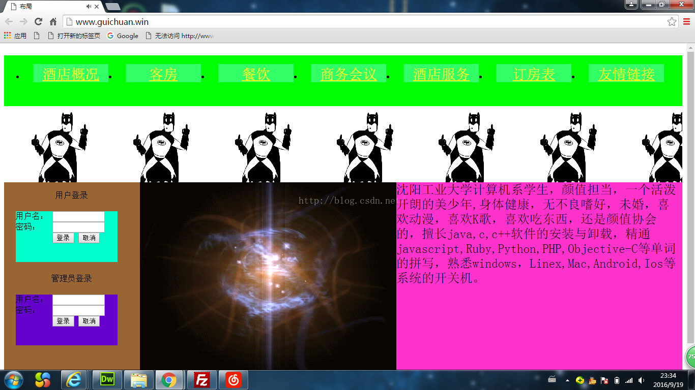
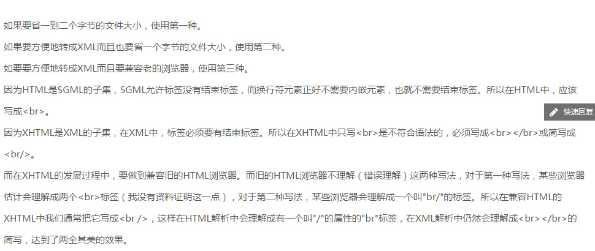

1.SetInterval()和setTimeout()函数的区别
JS里设定延时：使用SetInterval和设定延时函数setTimeout 很类似。setTimeout 运用在延迟一段时间，
再进行某项操作。setTimeout("function",time) 设置一个超时对象 setInterval("function",time)
设置一个超时对象SetInterval为自动重复，setTimeout不会重复，我多次用到了这两个函数，比如网站的
轮播图，图片闪烁特效等，只要需要间隔时间，即跟时间有关的都需要他们，建议大家学习除了找学长还有
找度娘，哈哈哈
2.marquee标签好高大上
marquee为常用的标签，就是各种网站中浮动的语句，如最上面的欢迎来到贵川的博客...
3.浅谈div+css布局
div+css布局可以说是目前最常见的布局，不多说,直接上图，

布局优点:
一、使页面载入得更快(推荐大家一个网址学习http://www.kwstu.com/ArticleView/divss_2013929173533658)
由于将大部分页面代码写在了CSS当中，使得页面体积容量变得更小。相对于表格嵌套的方
式，DIV+CSS将页面独立成更多的区域，在打开页面的时候，逐层加载。而不像表格嵌套那
样将整个页面圈在一个大表格里，使得加载速度很慢。
二、降低流量费用
页面体积变小，浏览速度变快，这就使得对于某些控制主机流量的网站来说是最大的优势了。
三、修改设计时更有效率
由于使用了DIV+CSS制作方法，在修改页面的时候更加容易省时。根据区域内容标记，到CSS
里找到相应的ID，使得更改页面的时候更加方便，也不会破坏页面其他部分的布局样式。
四、保持视觉的一致性
DIV+CSS最重要的优势之一：保持视觉的一致性；以往表格嵌套的制作方法，会使得页面与页
面，或者区域与区域之间的显示效果会有偏差而使用DIV+CSS的制作方法，将所有页面，或所
有区域统一用CSS文件控制，就避免了不同区域或不同页面体现出的效果偏差。
五、更好地被搜索引擎收录
由于将大部分的HTML代码和内容样式写入了CSS文件中，这就使得网页中正文部分更为突出明
显，便于被搜索引擎采集收录。
六、对浏览者和浏览器更具亲和力
我们都知道网站做出来是给浏览者使用的，对浏览者和浏览器更具亲和力，DIV+CSS在这方面
更具优势。由于CSS富含丰富的样式，使页面更加灵活性，它可以根据不同的浏览器，而达到
显示效果的统一和不变形。
4.两个月的小成果，上图

5.html中br的三种写法及区别：

6.我唠叨一下
html超文本标记语言css层叠样式表javascript动态标记语言，html是骨架，css是装饰，JavaScript
是行为。